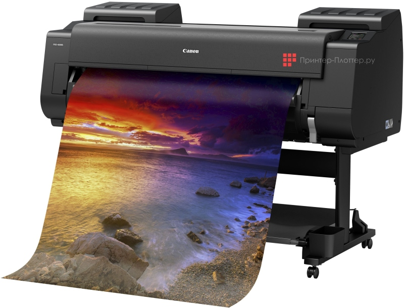

Плоттеры - это устройства, предназначенные для печати больших форматов, таких как плакаты, чертежи и т.д. Они могут испытывать различные проблемы и неисправности.

Вот некоторые из наиболее распространенных проблем с плоттерами и способы их решения:
плоттер не печатает:
проверьте уровень чернил или тонера. Если они закончились, замените их;
убедитесь, что бумага вставлена правильно и не замята;
проверьте, включен ли плоттер и подключен ли он к компьютеру;
попробуйте перезагрузить плоттер и компьютер;
если ничего не помогает, проверьте драйвер плоттера на компьютере. Возможно, его нужно обновить или переустановить.
плоттер печатает пустые страницы:
проверьте уровень чернил или тонера. Если они закончились, замените их;
убедитесь, что бумага вставлена правильно и не замята;
проверьте, включен ли плоттер и подключен ли он к компьютеру;
если ничего не помогает, возможно, проблема связана с картриджем или печатающей головкой. В этом случае потребуется профессиональная помощь.
плоттер печатает с полосами:
проверьте уровень чернил или тонера. Если они закончились, замените их;
убедитесь, что бумага вставлена правильно и не замята;
очистите печатающую головку согласно инструкции производителя;
если ничего не помогает, возможно, проблема связана с картриджем или печатающей головкой. В этом случае потребуется профессиональная помощь.
плоттер издает странные звуки:
проверьте, нет ли замятия бумаги;
убедитесь, что все части плоттера надежно закреплены;
если ничего не помогает, возможно, проблема связана с механизмом плоттера. В этом случае потребуется профессиональная помощь.
плоттер не распознается компьютером:
проверьте кабель USB, соединяющий плоттер и компьютер;
убедитесь, что драйвер плоттера установлен и обновлен;
если ничего не помогает, попробуйте переустановить драйвер плоттера.